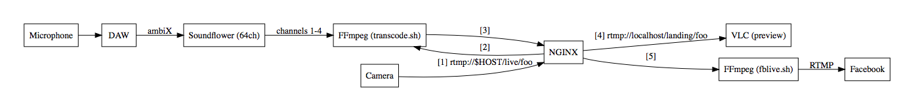
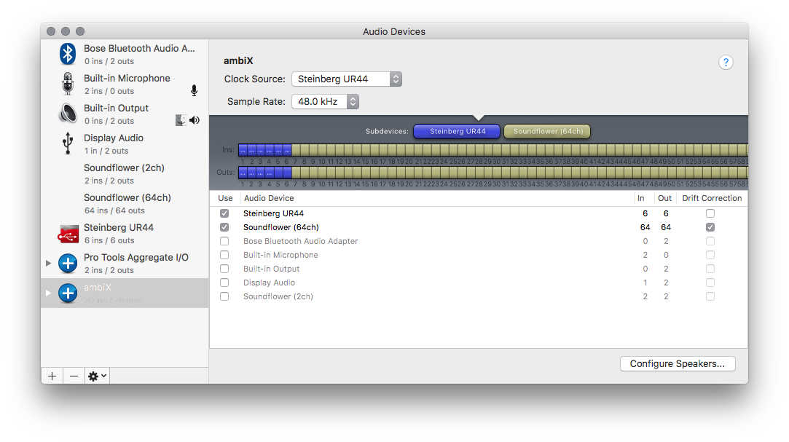
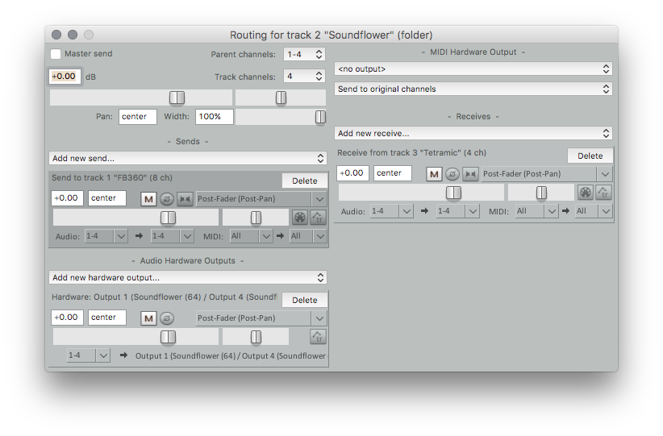
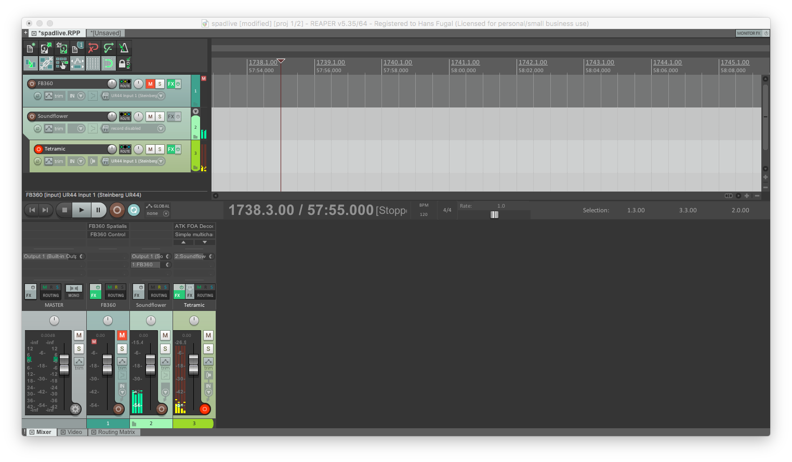
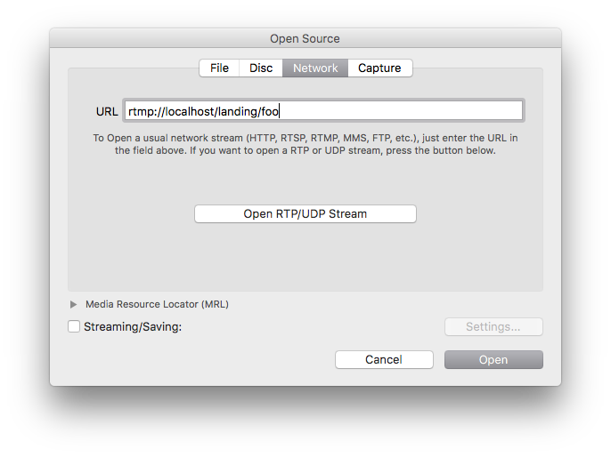
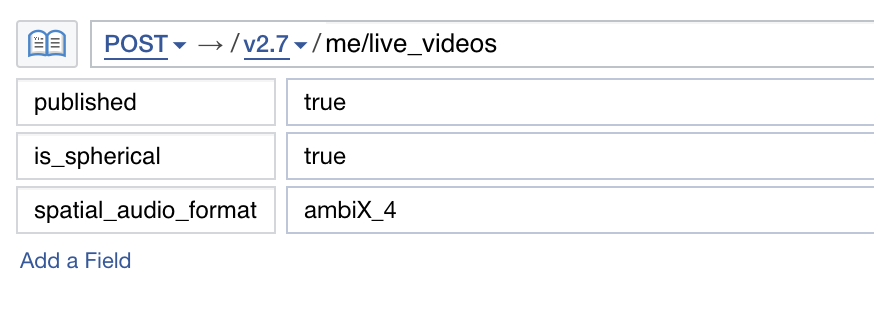

Using an Ambisonic Microphone With Your Live 360 Video on Facebook¶
Facebook Live 360 video now supports spatial audio. Cameras with integrated spatial audio will be available soon, but you may wish to go live with an ambisonic microphone independent of the 360 camera. This is possible, though there are a few extra steps to get started so our guide below walks you through the entire workflow.
Hardware¶
- A computer. This document describes the workflow on a Macbook.
- An ambisonic microphone and compatible audio interface. Any ambisonic microphone that can give you four channels of ambiX audio in your DAW will suffice. We used a Core Sound TetraMic, and another example is the Sennheiser AMBEO VR. Note: The Zoom H2n only supports ambiX audio when recording to SD card, not when in USB microphone mode.
- An RTMP-capable 360 camera, e.g. the Orah 4i or the Giroptic iO.
Software¶
- A Digital Audio Workstation (DAW). Screenshots herein are from Reaper.
- Soundflower for routing audio between applications.
- NGINX with the RTMP module to serve as an RTMP proxy.
- FFmpeg to transcode the audio and video.
- Custom scripts included in this document.
If you use Homebrew, the following commands will take care of Soundflower, NGINX, and FFmpeg:
brew tap homebrew/nginx
brew install nginx-full --with-rtmp-module
brew install ffmpeg
brew cask install soundflower
Signal Flow¶
NGINX acts as an RTMP relay, and calls out to FFmpeg which mixes the ambisonic audio with the video, then relays the RTMP stream to Facebook.

Workflow¶
Microphone → DAW¶
Bringing the microphone signal into the DAW and doing any necessary processing (e.g. A-format or FuMa B-format to ambiX) is beyond the scope of this document. Facebook Live 360 supports first-order ambisonics in ambiX format (4 channels in ACN order with SN3D normalization).
DAW → Soundflower¶
The ambisonic signal needs to be routed to Soundflower where FFmpeg can read it. You may need to set up an aggregate device with the appropriate ambisonic microphone device and the Soundflower (64ch) device — as seen in this screenshot:

Route the 4 channels of live ambiX audio to the first four channels of “Soundflower (64ch).” In Reaper this is done in the track routing dialog, by adding an Audio Hardware Output for the first channel of Soundflower (64ch), with 4 channels of output.

The video from the camera and the audio from the microphone are not synchronized; this needs to happen manually. If buffers are large enough, synchronization seems to be stable once established, but it needs to be reestablished for each live stream. This Reaper JS effect provides a simple slider for adjusting delay:
// install in ~/Library/Application Support/REAPER/Effects
desc:Simple multichannel delay
desc:Simple multichannel delay [FB360]
// by frames @30fps
slider1:0<0,6,0.03333>Delay (s)
@init
offset = 0;
@slider
// left shifting by 0 is the only way I could find to force it to be an int.
len = (slider1 * srate) << 0;
// Basically this is a pointer into our 8MB address space.
buf = 0;
@sample
// splX or spl(X) to read/write the sample at channel X
// num_ch
c = 0;
loop(num_ch,
i = num_ch * offset + c;
x = spl(c);
spl(c) = buf[i];
buf[i] = x;
c += 1;
);
offset += 1;
offset %= len;
You can monitor the microphone with spatial audio by adding the FB360 Spatial Workstation plugins to another track and utilizing the binaural rendering. Set the input in the Spatialiser plugin to ambiX and make sure “decode binaural” is selected in the Control plugin.

Camera → NGINX¶
NGINX is the hub of RTMP activity on the computer. It calls out to FFmpeg for transcoding, and is pulled from by VLC for preview and FFmpeg for streaming to Facebook. Sample NGINX configuration:
# nginx clears environment, except what we pass through. Pass through PATH
env PATH;
# nginx insists on this existing
events {
}
rtmp {
# kill ffmpeg gracefully
exec_kill_signal term;
interleave on;
wait_key on;
# You can play with this. Bigger is safer, smaller is "more live". Besides
# the usual risk of dropped packets, if the buffer is too small audio and
# video may get out of sync.
buflen 2s;
server {
# Default RTMP port
listen 1935;
application live {
live on;
# This script transcodes and mixes in the Soundflower audio.
# It should be on your path.
exec transcode.sh rtmp://localhost/$app/$name rtmp://localhost/landing/$name;
}
# For preview/synchronization, point VLC at this (rtmp://localhost/landing/$name).
# Then run fblive.sh with the destination stream URL and $name
application landing {
live on;
record_path /tmp/rec;
record_unique on;
#record all;
}
}
}
# http://localhost:1936/stats
http {
server {
listen *:1936;
location /stat {
rtmp_stat all;
rtmp_stat_stylesheet /stat.xsl;
}
location /stat.xsl {
root /usr/local/share/rtmp-nginx-module;
}
}
}
Once NGINX is running, stream RTMP from the camera to
rtmp://$HOST/live/$NAME where $HOST and $NAME are the
hostname (or IP address) of your computer and some simple name to
identify this session (e.g. “foo” above).
NGINX → FFmpeg ← Soundflower¶
transcode.sh is a wrapper around FFmpeg that transcodes the video
and muxes it with the audio.
#!/bin/bash
# This script is executed by nginx. It must be in your PATH (as seen by nginx).
SPADLIVE_LOG=${SPADLIVE_LOG:-/usr/local/var/log/spadlive.log}
video_kbps=2000
video_height=1080
audio_kbps=256
buffer_secs=3
# rtmp stream to pull
src=$1
test -n "$src" || exit 1
# rtmp stream to push
dst=$2
test -n "$dst" || exit 2
# mark the time
date >> "$SPADLIVE_LOG"
# audio device names
ur44='Steinberg UR44'
soundflower64='Soundflower (64ch)'
# Run ffmpeg.
# we capture the first four channels of the input audio device
# we get video from input 0, audio from input 1, and sync video to audio with ",1:a"
# h264, veryfast preset, up to 2mbit, 5s buffer (5x the bps), ?x1080, 30fps, 2s GOP
# use all the cores
# use AAC for the audio codec
# copyts uses the original timestamps, but offset to 0
# async=4800 allows audio to warp up to 10% to maintain sync
exec ffmpeg -nostats \
-i "$src" \
-f avfoundation -i "none:$soundflower64" \
-map_channel 1.0.0 \
-map_channel 1.0.1 \
-map_channel 1.0.2 \
-map_channel 1.0.3 \
-map 0:v,1:a -map 1:a \
-c:v h264 -preset fast -maxrate ${video_kbps}k -bufsize $[ $buffer_secs * $video_kbps ]k -vf scale=-2:$video_height -r 30 -g 60 \
-threads 4 \
-c:a aac -b:a ${audio_kbps}k \
-copyts -start_at_zero -af aresample=48000:async=1 \
-f flv "$dst" \
>>"$SPADLIVE_LOG" 2>&1
NGINX → VLC¶
Now open the RTMP stream rtmp://localhost/landing/$NAME in
VLC (or other software
capable of streaming RTMP). $NAME is the same name used by the
camera above. Screenshot:

Synchronize the camera’s video with the microphone’s audio, by adjusting the delay plugin. (Clapping or tapping a glass with a pen works well.) Once the stream is synchronized, you’re ready to go live. Note that this synchronization step is necessary each time you reinitiate a stream from the camera, because it depends on the dynamic buffer size the camera chooses.

FFmpeg → Facebook¶
To stream to Facebook you need the stream URL. Getting the stream URL is beyond the scope of this document, but an example request in the Graph API Explorer would look like this:

fblive.sh is a script that pulls the RTMP stream from NGINX and
forwards it to Facebook. We pass it the RTMP stream URL that we get from
Facebook which includes the session key.
#!/bin/bash
# Execute this script once you have a stream feeding to nginx on rtmp://localhost/live/$name
# Before running this script, you can run e.g. VLC to preview and synchronize audio at rtmp://localhost/landing/$name
# NB only one program can pull from the landing RTMP stream at a time, so stop VLC before running this.
function usage {
echo "$0 \$RTMP_DEST [\$NAME]"
exit 1
}
# $1 is RTMP stream to push
dst=$1
test -n "$dst" || usage
# $2 is the local stream key (if any)
src="rtmp://localhost/landing/$2"
exec ffmpeg \
-i "$src" \
-c copy \
-f flv "$dst"
When you are ready to go live on Facebook, first close VLC, then run
fblive.sh with the RTMP stream URL you got from Facebook, and the
name you used above, e.g.:
./fblive.sh "rtmp://rtmp-api.facebook.com:80/rtmp/123456789012345?ds=1&s_l=1&a=oVmK4kAThV2vwg8YEIR" foo
Checklist¶
- Sound check
- Video check
- Orientation check
- Get Facebook Live 360 stream URL
- Camera to
rtmp://$HOST/live/$NAME - VLC to
rtmp://localhost/landing/$NAME - Audio synchronization
- Preview check
- Close VLC
fblive.sh $RTMP_URL $NAME
Help and Feedback¶
Look for help from us and the community in the Facebook 360 Spatial Workstation group, and let us know if you have feedback on how to streamline this workflow or anything else. Happy live streaming!